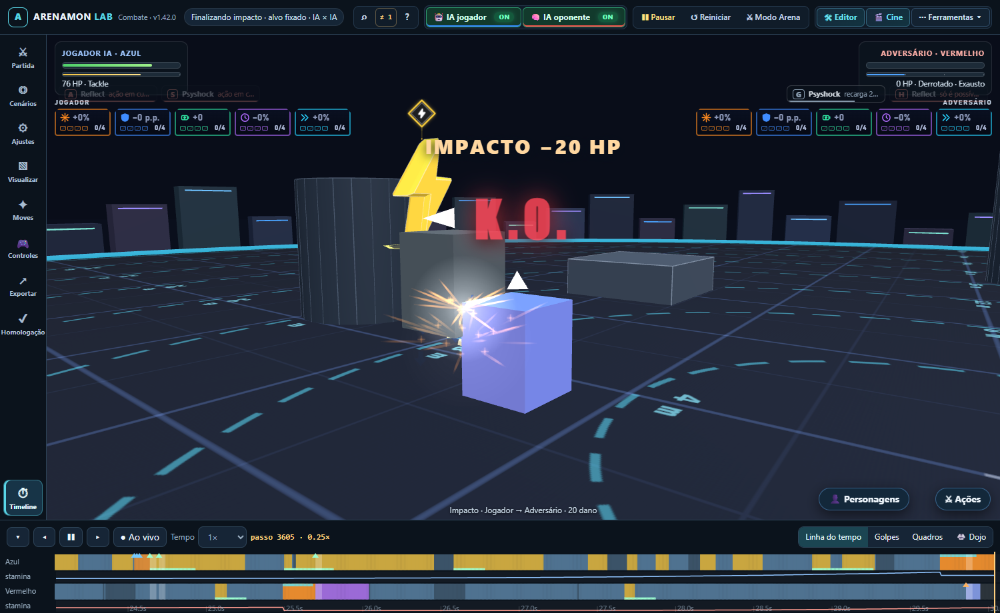
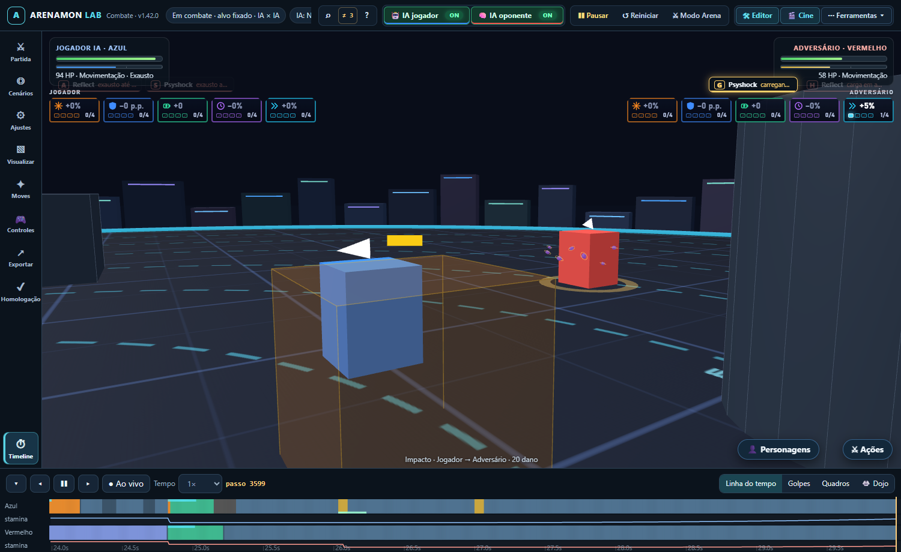
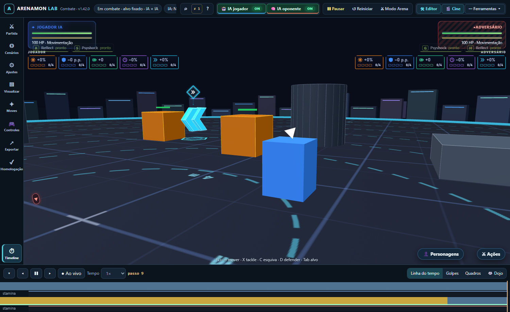

Homologação F8 do laboratório de combate
Bateria da Task 16 (spec §15) em 29/10/2026 · base 01ca8d0 + correções desta entrega · máquina i5-12450H, Node v25.8.0, Edge (WebGL real) · números de resultado.json · relatório: docs/RELATORIO_HOMOLOGACAO_F8.md
Achados (corrigidos nesta entrega)
| Achado | Causa raiz | Correção |
|---|---|---|
| Dois jogos rodando juntos divergiam no tick 252 (a IA do azul decidia diferente) | A IA consulta a permissão dos Moves antes do passo; a permissão lia a lista de lutadores do módulo (CTX_FIGHTERS), que apontava para o último jogo simulado. O Bullet Punch dava «sem alvo» e a decisão mudava. O mesmo valia depois de carregar um save (objetos antigos). | Cada IA aponta o contexto para a própria partida ao decidir (setControllerContext). Teste vermelho → verde. |
| Dois jogos alternados ficavam ~15× mais lentos | O grafo de navegação (Yuka) tinha cache de um único mapa: alternar mapas reconstruía o grafo a cada passo (~10 ms). | Guarda os últimos 8 mapas; o reaproveitado volta com custos base, idêntico a reconstruir. |
1 · Replay e múltiplos jogos
| Verificação | Resultado |
|---|---|
| Jogos A (semente 11) e B (12) alternados passo a passo × cada um sozinho, 3.000 passos: hash do estado completo + eventos (eventId, contactId) | idênticos (103 eventos, 6 com contactId) |
| Save no tick 1, 600, 1.777 e 3.000 e continuar até 3.600, no mesmo jogo (anda 37 passos e volta) e num jogo novo | 8 de 8 idênticos bit a bit |
| Replays de referência (Tackle, Quick Attack, Reflect) | verdes |
2 · 100 resets
| Verificação | Resultado |
|---|---|
| 100 ciclos reset + 600 passos IA × IA: arrays/Map/Set do jogo (até 4 níveis) e registros globais | nada cresceu entre o 10º e o 100º |
| Estado final igual em todos os ciclos (reset completo) | 1 estado distinto em 100 |
| Eventos guardados (teto 12) · passiveProcessed · spawnLog | 12 · 0 · 0 |
| Navegador: 100 reinícios pelo botão Iniciar — geometrias / texturas / programas | 87 / 9 / 18 do 1º ao 100º (execução anterior: 108 / 9 / 24, também estável) |
3 · Partidas inteiras com invariantes em todo passo
Sem NaN/Infinity · lutador dentro da arena · HP em [0, máx] · stamina em [0, máx] · conservação de HP (livro do DamageResolver + curas com evento) · resíduo do solver ≤ tolerância ou pinEscape · sem pouso falso · hitstop não move nada · contrato de todo evento · eventId único e crescente.
| Semente | Rodadas em 180 s | Melhor de três (3 primeiras) | Violações |
|---|---|---|---|
| 1 | 6 | vermelho 3 × 0 | 0 |
| 2 | 8 | vermelho 2 × 1 | 0 |
| 3 | 6 | azul 2 × 1 | 0 |
| 4 | 6 | azul 2 × 1 | 0 |
Totais: 1.659 eventos, 260 impactos, 462 passos de hitstop, 183 pousos (1 sobre rocha do Emerging Stone que subia no mesmo passo, conferido à parte; teto no teste: 3), 0 pinEscape, resíduo máximo 0. Arena quadrada (|x|,|z| ≤ arenaHalf − halfExtent): 60 s, 2 rodadas, 0 violação.
4 · Tempo por passo
| Medida | Valor |
|---|---|
| Por passo (comando do azul + Game.step com a IA do vermelho), 86.400 passos | p50 0,065 ms · p95 0,164 ms · p99 0,319 ms · máx 23,7 ms (pico isolado de GC/SO) |
| Orçamento de regressão no teste | p95 < 2 ms e p50 < 1 ms (≈ 12× o medido; o passo tem 8,33 ms). Estrito sozinho e no --lento; dentro do rapido paralelo (12 testes disputando CPU) vira aviso impresso, porque ali o tempo de parede mede a disputa. |
bench:moves (3 repetições × 1.800 passos) | p95 de 20 µs (zonas) a 371 µs (entidades no limite); relatório completo (gerado por runBench + toMarkdown dentro do teste, não por bench-moves.mjs --write) |
5 · Acessibilidade e interface (Edge, dist compilado)
| Verificação | Resultado |
|---|---|
| Controle, 30 s IA × IA com tudo ligado | 12 golpes → 14 tremores e 0 flash nesta execução (a anterior: 11 golpes → 16 tremores e 3 flashes). O flash depende de qual golpe sai; a prova de Sem Flash só vale quando o controle teve flash. |
| Sem Flash + Reduzir Movimento, 30 s IA × IA | golpes ocorreram; 0 tremor, 0 flash, nenhum quadro com flash/tremor ativo |
| Pausa, quadro a quadro, perda de foco, reinício | sem erro |



Falha conhecida fora desta entrega (RESOLVIDA depois): ai-eval.test.mjs
Não é causada pela Task 16. A guarda «revisão 2 mantém ações negadas controladas» (negadas(rev 2) ≤ negadas(rev 1) + 20, 10 pares, semente 100) passa na main antes do branch (96205a5) e em ad4973b, e falha a partir de db5222e (Task 9, gate da F4): +19 → +23. RESOLVIDO: a guarda de semente única foi substituída por uma guarda estatística de 8 janelas de 10 pares (sementes 100, 110, … 170): média da diferença de negadas ≤ 22,3 por janela (13,4 + 3 × 8,4/√8, ancorada em 91 janelas medidas; medido +13,9) e média da diferença de vitórias ≥ −3,9 (medido −0,1). Investigação completa: .superpowers/sdd/2026-10-28-overhaul-f3-f9/ai-eval-investigation-report.md.
| Commit | negadas rev 2 × rev 1 | diferença | vitórias rev 2 × rev 1 |
|---|---|---|---|
| 96205a5 (main) / ad4973b | 59 × 40 | +19 (passa) | 13 × 7 |
| db5222e em diante | 58 × 35 | +23 (falha) | 13 × 7 |
- Causa: fragilidade estatística da guarda de semente única. Medida do mesmo jeito, a main já tinha 9 das 10 sementes 100–109 acima de +20; em janelas de 10 pares a guarda falha em ~22 % das sementes nos dois commits (20/91 e 21/91).
- O que mudou de fato: só 2 acertos de raspão legítimos de projétil (contato varrido, sem sobreposição no fim do subpasso) em 200 lutas (sementes 104 e 198); vitórias inalteradas (13 × 7); a previsão da IA já usa um corredor contínuo, mais largo que o corpo.
- O contato varrido de projétil é a correção certa de tunelamento e fica. O teste não foi alterado; está na faixa lenta (fora do
rapido) e aguarda decisão do usuário: guarda estatística com várias sementes ou reancorar o limite.
O que NÃO foi verificado
- Intervalos de 45 s e preparação de 90 s: o jogo não tem relógio de rodada, intervalo nem preparação. A «melhor de três» é contada pelo teste sobre rodadas reiniciadas como o botão Iniciar faz.
- 100 resets pelo fluxo completo do app (match-flow) sem navegador: o match-flow depende do DOM; foi coberto no navegador (100 × startMatch), medindo memória da GPU, não as coleções internas da interface.
- Acessibilidade: medida no renderizador padrão (VFX legado). Os outros renderizadores (novo/quarks) e o pós-processamento não foram exercitados com Sem Flash.
- Desempenho de GPU/FPS em máquinas-alvo: só simulação na CPU (Node).
- Penalidade de aresta travada da navegação ainda mora no grafo compartilhado; com os padrões (replanejamento 0,4 s < travamento 0,8 s) ela nunca dispara. Só pesa se alguém subir o slider de replanejamento acima do de travamento.